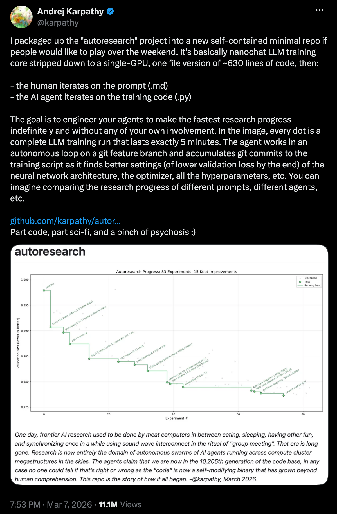

What is autoresearch?
Autoresearch is the use of autonomous AI agents to run the machine learning research loop itself: proposing experiments, writing the code, training and evaluating models, and deciding what to try next, while humans set the goals.
Why it exists
The motivation is simple: training a neural network is hard. There are many levers and knobs to turn, many hacks and tricks you need to know, and the design space is huge. You have to run many experiments before you find the right combination, and often you do not even know what the design space is.
Autoresearch automates that search. AI agents are already good at writing training code, and the LLMs behind them have been trained on a lot of data, including many of the papers and articles describing the hacks that make neural networks work. Given structured feedback about what happened during a run (losses, gradients, evals, logs) they can also decide what to try next. That turns one researcher's goal into a self-correcting loop of experiments.
Where the idea comes from
At its core, autoresearch is simple: a prompt that tells an AI agent to iterate on a task, plus an eval that scores every attempt. The name went mainstream in March 2026, when Andrej Karpathy released a repo with exactly that setup[1]: a single GPU LLM training script of about 630 lines (a stripped down nanochat core) plus a Markdown prompt. The agent reads the prompt, edits the training script, trains for 5 minutes, keeps the change if validation loss improves, and repeats overnight.
But the idea of using LLMs to automatically train models and discover algorithms has a longer history and a research community behind it. People have been thinking about this for a while: among other early works, DeepMind's FunSearch put LLM-driven program search in Nature back in 2023[3]. AlphaEvolve scaled the recipe in 2025 and found, among other things, a faster way to multiply matrices, the first improvement over Strassen's algorithm in 56 years[2]. Sakana AI's ShinkaEvolve open sourced a sample-efficient take on the same loop a few months later[4]. Some of the results:
Multiplies 4x4 complex matrices in 48 scalar multiplications, improving on Strassen's 49 from 1969. Also the origin of the circle packing task we use in our benchmarks.
FunSearchGOOGLE DEEPMIND · 2023Discovered new constructions for the cap set problem, the first result from an LLM search loop published in Nature.
ShinkaEvolveSAKANA AI · 2025Open source program evolution that reaches state of the art on circle packing in about 150 evaluations instead of thousands.

How agentic model training works
Agentic training of models means the agents drive the full training loop, not just a search over hyperparameters. In a typical autoresearch run:
- You state the goal. Beat this baseline, cut this latency, test these three ideas, plus the eval script that defines the metric.
- Agents plan the experiments. They read the repository and propose concrete changes: learning-rate sweeps, data mixes, architecture tweaks, tokenizers, optimizers, quantization and serving configs.
- Every experiment runs as a real commit. Code, environment, metrics, logs, and checkpoints are captured, so every result is reproducible and inspectable.
- Results steer the next round. Failed runs are diagnosed (NaN losses, OOMs, divergence) and retried or pruned; winners are scaled up and merged.
- Nothing ships unless the metric moves. The eval you wrote is the only judge.
Autoresearch vs. AutoML
| APPROACH | WHAT IT DOES | WHAT IT CAN'T DO |
|---|---|---|
| AutoML / HPO | Searches a predefined space (hyperparameters, sometimes architectures) with fixed strategies. | Can't write new code, change the data pipeline, or pursue an open-ended research goal. |
| Autoresearch | Agents write real code in your repo, run and score experiments on your infrastructure, and iterate toward a goal. | Doesn't replace judgment: humans still choose the goals and the evals that define success. |
What an autoresearch platform provides
Running hundreds of agents against one goal takes more than a prompt. An autoresearch platform like Autolab supplies the infrastructure layer:
- Orchestration: scheduling hundreds of concurrent experiments across heterogeneous GPU fleets, keeping no GPU idle.
- Telemetry and context: logging everything that happens during training and compressing it into the structured context agents need to make good decisions.
- Reproducibility: every experiment pinned as a commit: code, environment, data, metrics, checkpoints.
- Evaluation discipline: every change scored against your evals, with a readout that ranks what worked and why.
- Security: everything runs on your cluster or your cloud account; code, data, and weights never leave your network.
What teams use it for
Autoresearch applies wherever a number needs to move and experiments are the way to move it: pre-training and fine-tuning of language models, post-training recipes (SFT, RL, distillation), computer vision and robotics model training, and inference optimization: quantization, kernels, and serving configs tuned for latency and cost.
Start running autoresearch today
Autolab installs in one line, points at the eval script that prints your metric, and starts the agents on your own compute.
References
- [1] Karpathy, A. autoresearch: AI agents running research on single-GPU nanochat training. GitHub repository, March 2026. github.com/karpathy/autoresearch; announcement: x.com/karpathy
- [2] Novikov, A. et al. AlphaEvolve: A coding agent for scientific and algorithmic discovery. Google DeepMind, 2025. deepmind.google
- [3] Romera-Paredes, B. et al. Mathematical discoveries from program search with large language models. Nature 625, 468-475, 2024. nature.com
- [4] Lange, R. T. et al. ShinkaEvolve: Towards Open-Ended and Sample-Efficient Program Evolution. Sakana AI, arXiv:2509.19349, 2025. arxiv.org/abs/2509.19349